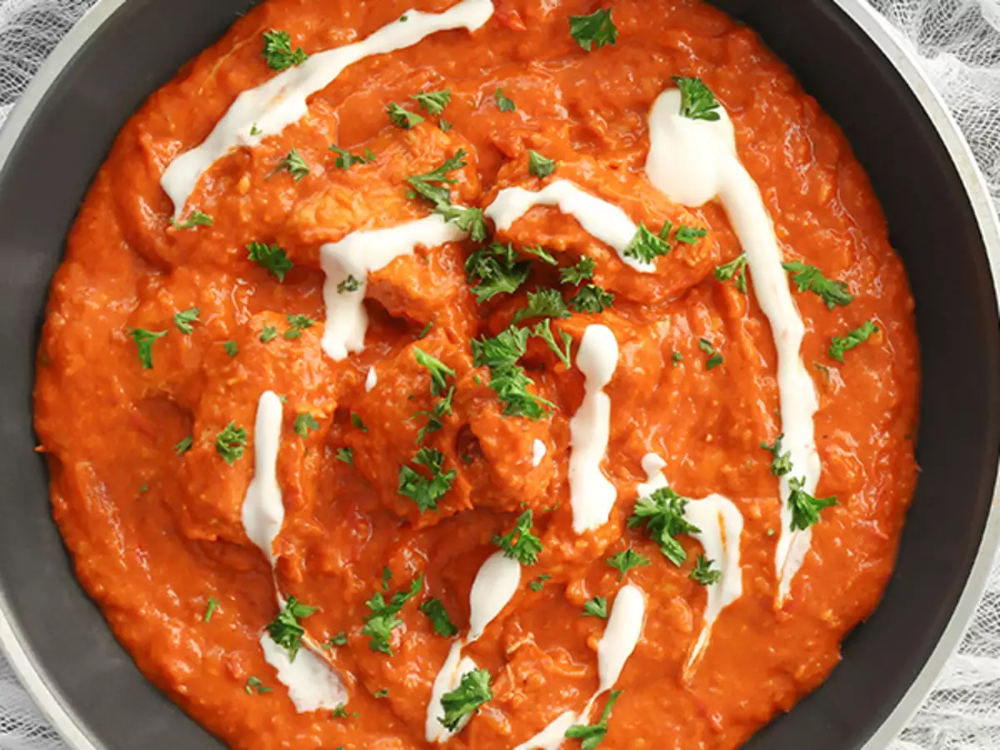
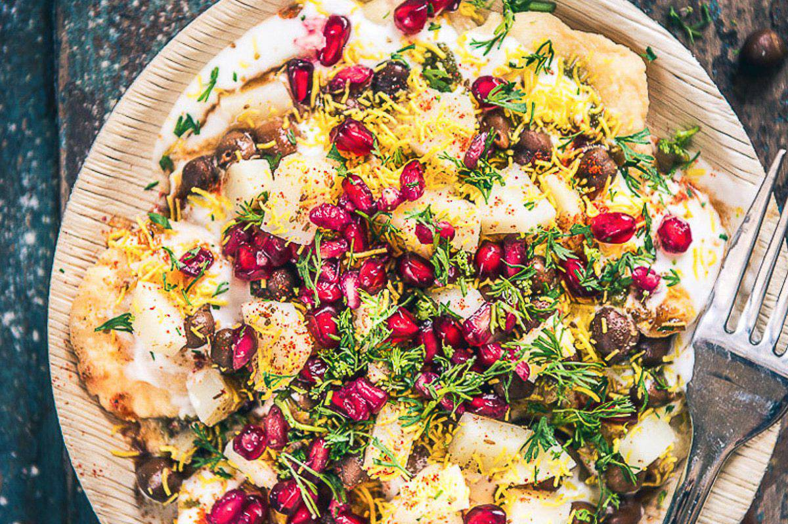
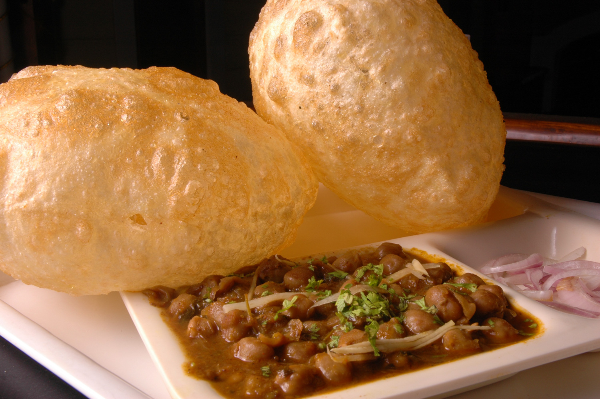

INDIAN CUISINE

Butter Chicken
Butter chicken, also known as murgh makhani, is a popular Indian dish made by marinating chicken in a mixture of yogurt and spices, and then grilling it. The chicken is then simmered in a creamy tomato-based sauce with cream and spices and is typically served with rice or naan bread.

Chaat
Chaat is a popular snack or street food in Indian cuisine consisting of a mixture of crispy fried dough (such as puri or papdi), boiled potatoes, chickpeas, onions, tomatoes, and a variety of chutneys and spices served include yogurt, tamarind sauce, sev, and cilantro.
 Dosa
Dosa
Dosa is a popular South Indian dish that is similar to a crepe or pancake. It is made by fermenting a batter made from rice and urad dal (a type of lentil) cooked as a thin, crispy pancake. Dosa can be served with sambar (a vegetable and lentil stew), chutneys (such as coconut or tomato), and a spicy potato filling known as masala.

Chhole Bhature
Chhole bhature is a popular North Indian dish that consists of spicy chickpeas (chhole) served with fried bread (bhature). This dish is a blend of spices used in chickpeas and the fluffiness of the bread or bhature.
 Biryani
Biryani
Biryani is a popular Indian dish that consists of long-grain rice, spices, and meat or vegetables, and sometimes eggs or fish. The dish is typically cooked in layers with the meat or vegetables and rice layered alternately with spices, fried onions, and sometimes saffron.